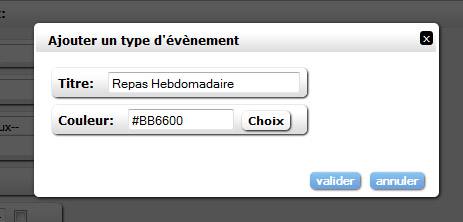
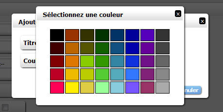

Pour l'ajout et la modification d'un type d'évènement, veuillez remplir les champs suivants: Titre: il s'agit de l'appellation que prendra le nouveau type d'évènement et qui sera présente dans le tableau des évènements ainsi que dans le calendrier. Couleur: Il s'agit de la couleur qui est liée à l'évènement dans le calendrier.  Indication: Est demandé ici un code couleur RGB (Red Green Blue) en hexadécimal (exemple: #FFFFFF (blanc)). Vous pouvez également remplir ce champ à l'aide d'un nom de couleur en anglais (exemple: blue, red, darkred...). Il vous est également possible de sélectionner directement un couleur via le bouton "choix".  Une fois la couleur sélectionnée, le code couleur correspond à cette couleur sera inscrit directement dans le champ couleur.